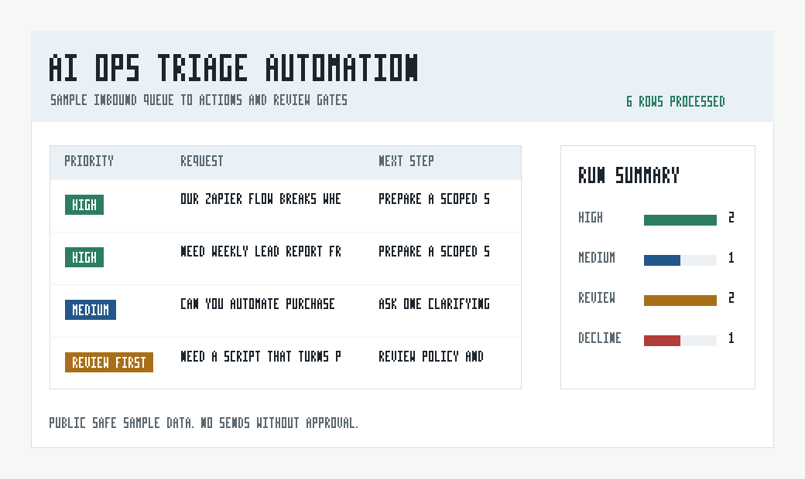

n8n Companion Workflow
Importable workflow JSON with webhook intake, JavaScript Code-node scoring, structured response, sample payload, and contract test.
Public-safe examples for n8n orchestration, agentic workspace installs, document-processing agents, REST API handoffs, Python data workflows, telecom OSS correlation, conversation QA, property ops triage, travel-ops email routing, WhatsApp/Gmail human handoff, dry-run email automation, and client-ready documentation.

Importable workflow JSON with webhook intake, JavaScript Code-node scoring, structured response, sample payload, and contract test.
Python workflow that turns an inbound request queue into scored CSV, action plan, follow-up drafts, and JSON summary.
Client-workspace install proof with CLAUDE.md, slash commands, MCP-style integration notes, approval gates, training steps, and 30-day support handoff.
AI app-builder release check for auth, payment, webhook, schema, env, and deployment blockers before production launch.
Generated-pipeline quality gate for schema drift, source evidence, duplicates, freshness, dry-run repair tasks, and publish safety.
Fictional quote-intake demo that produces staff checklists, missing-info prompts, and a run summary.
SMS-style conversation test matrix with intent classification, opt-out handling, service-recovery routes, pricing guardrails, and human review gates.
WhatsApp/Gmail approval-loop demo with AI mode, human mode, handoff packets, inactivity resume rules, and zero automatic customer sends.
Multi-step document workflow that extracts fields, flags risk, builds staged REST payloads, and records an agent-style tool trace.
Database-backed weekly statements with grouped records, separate CC rules, dry-run mail payloads, idempotency keys, and launch gates.
Gmail-style travel inbox triage with Sheets status rows, urgent Slack alerts, draft auto-replies, staged booking API payloads, and loop protection.
Telegram intake MVP pattern with referral tracking, lead scoring, structured AI summary payloads, dry-run owner alerts, and consent review routes.
Reusable speed-to-lead and database-reactivation workflow pattern with CRM adapter choices, consent stop gates, dry-run payloads, retries, and config handoff.
OSS power-dip tickets, RFMS alarms, and GIS equipment mapping become a review-ready correlation queue, operator digest, and no-live-update run summary.
Property-management inbox demo with maintenance routes, invoice review packets, dry-run task payloads, owner digest, idempotency keys, and launch gates.
Operations layer for run logs, retry queues, idempotency review, slow-run alerts, incident routing, and client-ready handoff metrics.
Load-test readiness layer for endpoint risk, peak RPS, latency, 5xx rate, spend, dry-run alerts, and launch gates before a beta or campaign spike.
Exported workflow JSON or scripts, sample input, expected output, validation command, and short maintenance notes.
Agree on the trigger, input shape, output target, success case, and failure case before moving from sample data to client systems.
One reproducible bug in a small React, TypeScript, JavaScript, or Python project gets a root-cause diagnosis, scoped fix, focused test, and plain-language handoff.
$75 starter rescue. See the exact scope.
Sample documents or exports become extracted fields, review routing, staged API payloads, idempotency notes, and a short runbook.
Typical starter scope: $150-$300.
Draft prompts or customer-message examples become response rules, edge cases, test messages, escalation routes, and implementation notes.
Typical starter scope: $150-$250.
Inbound service messages become AI draft approvals, human handoff packets, state tables, pause/resume rules, and a no-auto-send launch gate.
Typical starter scope: $150-$300.
A 7-10 question bot intake becomes scored leads, referral tracking, AI summary payloads, owner alerts, and a clear milestone acceptance report.
Typical starter scope: $150-$300.
New-lead and dormant-contact samples become reusable n8n-style templates, CRM adapter choices, consent stop gates, and launch-ready config notes.
Typical starter scope: $150-$300.
OSS tickets, RFMS alarms, and GIS equipment maps become a small dry-run correlation workflow with confidence scoring and operator review output.
Typical starter scope: $250-$500.
Existing automations get run logs, retry rules, idempotency checks, alert routing, incident notes, and a handoff-ready operating summary.
Typical starter scope: $150-$300.
Traffic samples and load-test output become endpoint risk rankings, monitoring payloads, cost flags, and launch gates before a public spike.
Typical starter scope: $150-$300.
One generated app or app-builder template gets a launch decision, ranked blocker queue, safe fix plan, and repeatable release check.
Typical starter scope: $150-$300.
One generated ETL/RAG/data pipeline gets schema, citation, drift, duplicate, freshness, and write-safety checks before publish.
Typical starter scope: $150-$300.
Sample tenant/vendor inbox messages become maintenance routes, invoice review packets, dry-run task payloads, and a manager-ready launch checklist.
Typical starter scope: $150-$300.
Sample travel-agency emails become status rows, urgent alerts, draft replies, booking API payloads, and a launch checklist.
Typical starter scope: $150-$300.
One broken or manual trigger-to-output workflow gets mapped, prototyped, validated, and documented with sample or sandbox data.
Typical starter scope: $150-$300.
PDFs, CSVs, spreadsheets, emails, or public pages become a clean report, structured output, validation checks, and a reproducible script.
Typical starter scope: $75-$200.
One trigger, one approved input source, one output target, validation logic, error handling notes, and a short runbook.
Use sample or sandbox data first. Keep secrets in credential stores. Keep customer-facing actions behind review until the workflow proves itself.
python3 -m pytest n8n_ai_ops_triage/test_workflow_contract.py \
ai_ops_triage/test_triage.py \
event_quote_triage/test_event_quote_triage.py \
conversation_flow_qa/test_conversation_flow_qa.py \
whatsapp_handoff_state_machine/test_whatsapp_handoff_state_machine.py \
document_intake_agent/test_document_intake_agent.py \
statement_email_workflow/test_statement_email_workflow.py \
travel_ops_email_hub/test_travel_ops_email_hub.py \
telegram_lead_qualifier/test_telegram_lead_qualifier.py \
property_ops_triage/test_property_ops_triage.py \
telecom_oss_correlation_poc/test_telecom_oss_correlation_poc.py \
workflow_reliability_monitor/test_workflow_reliability_monitor.pyBest fit: small async pilots for n8n workflows, Python/API automation, document intake, agent-style task routing, structured data cleanup, WhatsApp/Gmail handoff, Telegram lead intake, travel email routing, reliability monitoring, reporting, and handoff-ready internal tools.
Pilot form: open a scoped inquiry
Email: nadeemskamel@gmail.com